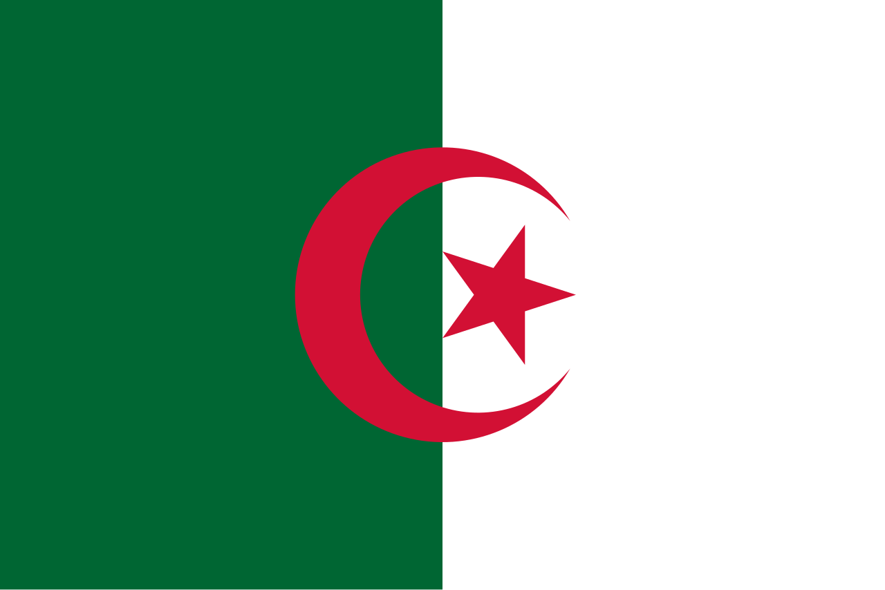

informações sobre a Argelia
Na Copa do Mundo FIFA de 1982, a Argélia surpreendeu o mundo ao derrotar a poderosa Alemanha Ocidental por 2 a 1. O resultado foi considerado uma das maiores zebras da história das Copas. Apesar da vitória histórica, a Argélia acabou eliminada após o controverso jogo entre Alemanha Ocidental e Áustria, conhecido como o "Jogo da Vergonha de Gijón", que levou a FIFA a mudar as regras para que as últimas partidas da fase de grupos fossem disputadas simultaneamente.
O futebol é o esporte mais popular da Argélia, e os jogos da seleção costumam mobilizar milhões de torcedores. Muitos dos jogadores nasceram ou cresceram na Europa, especialmente na França, devido à forte ligação histórica entre os dois países. Essa mistura de influências europeias e norte-africanas ajudou a criar equipes tecnicamente qualificadas e competitivas. Na Copa de 2026, o retorno da Argélia ao torneio foi comemorado como um dos grandes momentos recentes do esporte no país.
O craque Riyad Mahrez é considerado um dos maiores jogadores da história da Argélia. Em 2016, ele ajudou o Leicester City a conquistar um título improvável da Premier League, uma das maiores surpresas da história do futebol. Depois, acumulou diversos troféus com o Manchester City. Seu sucesso inspirou uma nova geração de jovens argelinos a sonhar com uma carreira no futebol internacional.